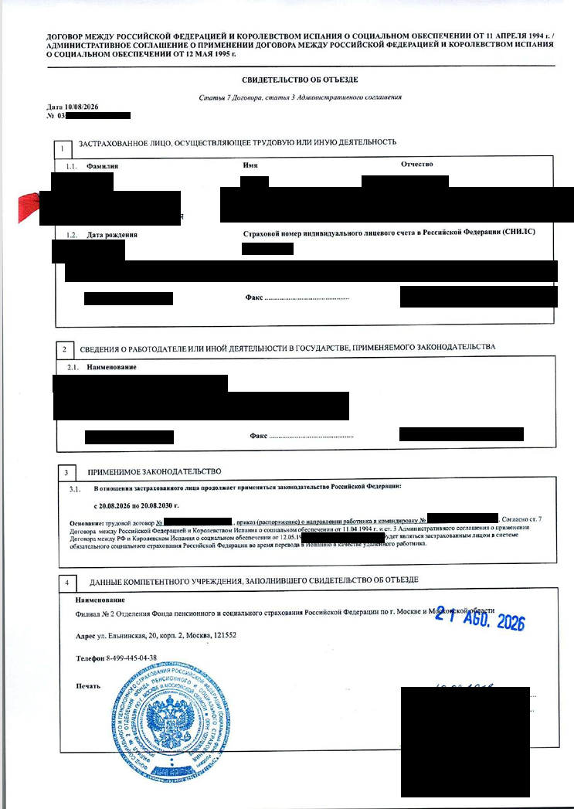
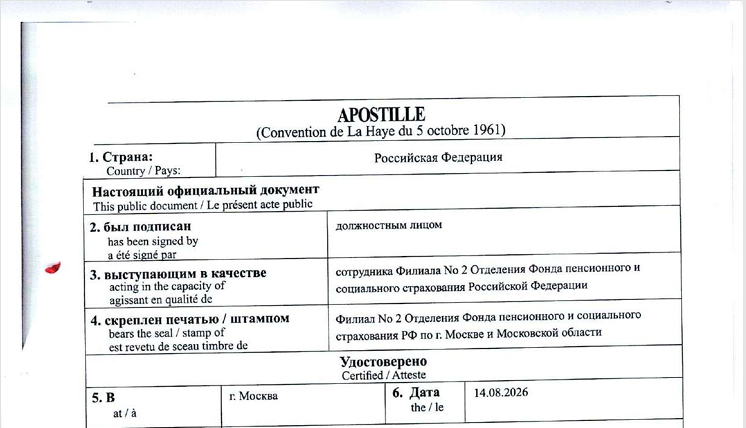
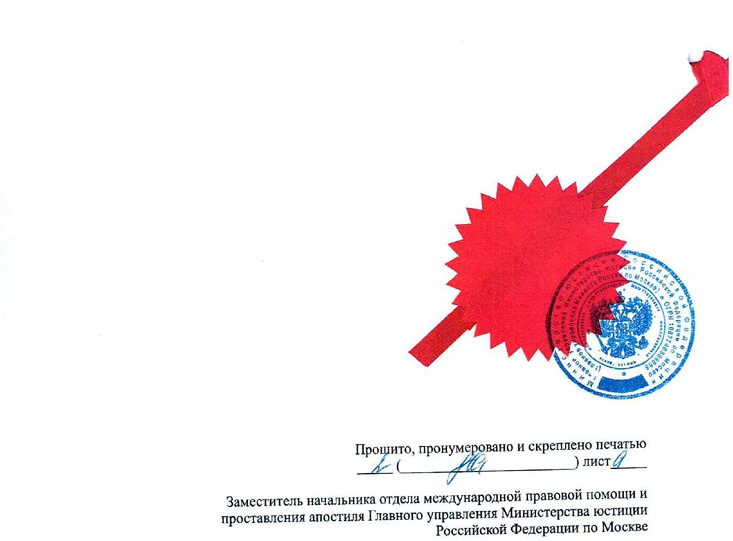

Документы
Свидетельство СФР для ВНЖ цифрового кочевника в Испании
Помощь в подаче документов на ВНЖ Испании: t.me/ola_espana
Для граждан России, которые подаются по найму у российского работодателя и сохраняют российское социальное страхование на время работы из Испании.
Что это за документ
В России это свидетельство об отъезде, которое выдает Социальный фонд России (СФР). Оно подтверждает, что на указанный в нем период работы из Испании к работнику продолжает применяться российское законодательство о социальном обеспечении.
В требованиях UGE документ называется сертификатом применимого законодательства: certificado de legislación aplicable. Он позволяет сохранить российское соцстрахование вместо регистрации работника в испанской Seguridad Social.
За свидетельством может обратиться работник или работодатель. Если вы уже в Испании, документы в России может подать и получить представитель по доверенности. Ее форму и полномочия на подачу и получение заранее согласуйте с принимающим отделением СФР.
Требования к свидетельству
В свидетельстве должны быть указаны работник, российский работодатель и период, на который сохраняется российское социальное страхование. UGE требует прямого указания, что свидетельство покрывает направление для удаленной работы с территории Испании.
Смысл формулировки, которую нужно согласовать с СФР:
На [ФИО] в период с [дата] по [дата] продолжает распространяться законодательство Российской Федерации о социальном обеспечении при выполнении удаленной работы с территории Испании.
Это пример формулировки, а не утвержденный бланк. Свидетельство оформляет и подписывает СФР.
Период покрытия запрашивайте на весь предполагаемый срок ВНЖ. По соглашению России и Испании период направления составляет до пяти лет с его начала; более длительный срок требует отдельного согласования между компетентными органами. Выдача нового свидетельства сама по себе не начинает новый пятилетний период.
Как получить свидетельство
1. Найдите принимающее отделение СФР
Позвоните в СФР по номеру 8 800 100-00-01 и попросите соединить с клиентской службой вашего региона. Объясните, какой документ нужен:
Нужно свидетельство об отъезде по договору России и Испании о социальном обеспечении от 11 апреля 1994 года. Я работаю у российского работодателя и буду работать удаленно из Испании. Где принимают документы на это свидетельство?
Уточните, нужно ли обращаться по месту вашего жительства или регистрации работодателя, какие документы принести и какую тему выбрать при записи. Если сотрудник не знаком со свидетельством, попросите передать вопрос специалисту по международным соглашениям. Основание выдачи: статья 7 договора и статья 3 административного соглашения от 12 мая 1995 года.
2. Подготовьте документы с работодателем
Приказ о командировке в Испанию. В нем указывают сотрудника, место, даты и служебную цель направления. По этим датам СФР определяет период покрытия. Цель должна соответствовать рабочим задачам, которые вы согласовали с работодателем.
Трудовой договор с условием об удаленной работе из Испании. Если такого условия нет, оформите дополнительное соглашение: дистанционный формат, работа с территории Испании и срок. Для UGE договор подают вместе с соглашением.
Отделения СФР по-разному относятся к дистанционной работе: одни принимают ее в договоре, но требуют приказ без такого указания; другие возражают и против дистанционного договора. Отдельные отделения принимают вместо приказа письмо работодателя или дополнительное соглашение с адресом работы в Испании. Согласуйте основание выдачи и формулировки с отделением до подписания документов.
Для UGE также подготовьте письмо работодателя. В нем подтвердите направление на работу из Испании, дистанционный характер обязанностей и сохранение трудовых отношений.
3. Запишитесь на прием через Госуслуги
Сервис доступен работающим гражданам, в том числе тем, кто готовит документы на ВНЖ. Можно записать себя или другого человека. Через эту форму бронируют время приема; документы на свидетельство подают в СФР при личном посещении, в том числе через представителя.
- Откройте запись на прием в СФР на Госуслугах и войдите в учетную запись.
- Укажите, кого записываете, и заполните данные посетителя. Если идет представитель, записывайте его.
- Выберите тему обращения, которую согласовали с клиентской службой.
- Выберите региональное отделение и клиентскую службу, подтвердившую прием документов.
- Выберите свободные дату и время, подтвердите запись.
Если нужной темы, клиентской службы или свободных мест нет, запишитесь по телефону СФР 8 800 100-00-01. Прием без записи также предусмотрен, но часы работы нужного специалиста уточните заранее.
4. Подайте заявление и документы
Для приема подготовьте:
- паспорт РФ, загранпаспорт и СНИЛС;
- трудовой договор с дополнительным соглашением, если удаленная работа оформлена отдельно;
- приказ о командировке либо согласованный с СФР документ работодателя;
- заявление на выдачу свидетельства;
- доверенность и паспорт представителя, если обращается он.
Комплект и способ предъявления документов работника через представителя уточните при первом звонке. Для заявления можно использовать такой текст:
В [отделение СФР]
От [ФИО, СНИЛС, адрес, телефон]
Прошу выдать свидетельство об отъезде в Испанию по договору России и Испании о социальном обеспечении от 11 апреля 1994 года и административному соглашению от 12 мая 1995 года.
Работаю в [компания, ИНН] по трудовому договору [номер, дата]. Работодатель направляет меня в Испанию на период с [дата] по [дата] на основании [приказ или другой согласованный документ]. Работа с территории Испании выполняется дистанционно, что предусмотрено [пункт договора или дополнительное соглашение].
Прошу подтвердить сохранение российского социального страхования на этот период и указать, что свидетельство распространяется на направление для удаленной работы с территории Испании.
[Дата, подпись]
Если отделение использует свой бланк заявления, заполните его. При подаче получите регистрационный номер обращения и уточните дату и способ получения свидетельства.
5. Получите бумажный оригинал
СФР выдает свидетельство после проверки документов. В зависимости от отделения оформление занимает от дня приема до 3-4 недель.
На оригинале должны быть подпись уполномоченного сотрудника и печать СФР. Рекомендуем попросить гербовую печать. Период покрытия и формулировку об удаленной работе проверьте до апостиля и перевода; исправления в свидетельство вносит СФР.
Если в свидетельстве нет слов об удаленной работе
Попросите СФР уточнить свидетельство. Если отделение выдает только свой стандартный текст, приложите для UGE трудовой договор с соглашением об удаленной работе, письмо работодателя и пояснение: кто работодатель, на какой период СФР подтверждает покрытие и где закреплена работа из Испании.
Такой комплект используют для обоснования условий работы, но UGE может потребовать уточненное свидетельство: по ее инструкции удаленная работа должна быть прямо указана в документе органа соцстрахования.
Отмена приказа о командировке
Работодатели отменяют приказ после получения свидетельства, но сохранение российского соцстрахования после отмены нужно отдельно согласовать с СФР. До отмены запросите письменное подтверждение, что при фактических условиях вашей работы покрытие сохраняется и свидетельство не нужно переоформлять.
Апостиль и перевод
Для подачи рекомендуем апостиль на оригинал свидетельства и jurado перевод на испанский вместе с апостилем.
- Найдите управление Минюста в регионе выдачи свидетельства. До оплаты уточните прием именно оригинала свидетельства СФР об отъезде, порядок записи и реквизиты пошлины.
- Оплатите госпошлину 2 500 рублей. Подайте оригинал с паспортом заявителя; квитанцию возьмите с собой. Укажите страну предъявления: Испания.
- Получите документ с апостилем. Срок Минюста составляет 3 рабочих дня; при запросе образца подписи или печати его могут продлить до 30 рабочих дней.
- Передайте свидетельство и апостиль присяжному переводчику, уполномоченному МИД Испании.
Статья 18 договора освобождает документы для его применения от легализации, поэтому Минюст может сослаться на это освобождение. При этом UGE может запросить апостиль при рассмотрении заявления на ВНЖ. Если Минюст отказывает, получите письменный ответ для пояснения в UGE. Апостиль на нотариальной копии не удостоверяет подпись сотрудника СФР на оригинале.
Медицинская страховка
Свидетельство СФР не дает права на медицинское обслуживание в государственной системе Испании. Для подачи нужна отдельная медицинская страховка с покрытием, соответствующим требованиям UGE.
Пример свидетельства с апостилем


